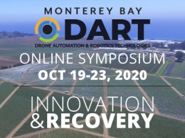

Thu. June 25, 2020
Participant Talks; Advanced Flight Ops; GIS Analysis Part 2; Deeper Dives by Field
All times are Pacific Daylight Time
9:00 - 9:50. Participant Speed Talks
Using Drone Technology as a Teaching Tool in the COVID-19 Era: A Call To Action
Maura Palacios Mejia
The talk will focus on requesting collaborators across the state of California to create/share drone footage from different ecosystems to develop teaching modules around issues like restoration, deforestation, fire ecology, marine ecology, etc.
Process for UAS flight plan approvals with the goal of safety and transparency
David Marshall
Creating a UAS Review Committee for safe operations. https://policy.humboldt.edu/policy-use-unmanned-aircraft-systems-uas-drones
Extracting features from drone capture
Warren Roberts
Extraction of features from orthomosaics generated from drone capture is easier than your think. Using AI you can train a dashboard to recognize features and extract for further assistance in GIS.
The use of drone imagery to quantify impacts of 2018 debris flow on the Carpinteria Salt Marsh.
Andrew J. Brooks and Thomas Bell
In January of 2018 following the Thomas Fire, a massive debris flow occurred in the foothills of the Santa Ynez mountains north of the City of Carpinteria. In a similar fashion to the well publicized Montecito debris flow, the Carpinteria debris flow washed tremendous amounts of large woody debris, rocks and sediment into local creeks and then into the Carpinteria Salt Marsh, a 230 acre coastal wetland just west of the City of Carpinteria. We used drone imagery captured in November 2017 before the debris flow and in January 2018 immediately following the debris flow and in January 2019 to estimate the impacts of the event and subsequent recovery on the bathymetry of the marsh channels.
Methane emission drone swarm sensing to better understand permafrost thawing dynamics
Derek Hollenbeck and YangQuan Chen
Using drones as moving sensors to sense the chemical plumes is a challenging problem with rich opportunities. Methane footprint is poorly quantified so far in fields like dairy farms, oil rigs, gas industry etc. This talk will focus on methane emission drone swarm sensing to better understand permafrost thawing dynamics that is linked to global warming and extreme weathers.
Forest Resilience: Upscaling from the Tree- to the Landsat-level using UAS and the NEON observatory
Megan E. Cattau Carol Wessman, Jennifer Balch, Maxwell Joseph, Joseph McGlinchy, Brian Johnson
Over the past 30 years, forests of the western United States have experienced a variety of natural disturbances, including drought, insect outbreaks, wildfires, blowdown events, and human land use. Datasets on canopy composition and structure are combined with disturbance history, including field-based forest inventories, drone-mounted sensor data, and moderate resolution satellite data, to investigate if disturbance interactions produce vegetation state transitions and threshold behaviors.
Virtual Reality and Drone FPV Helping Physically Disabled People to Navigate Through Less Accessible Routes
Mehrdad Koohikamali
This project is aimed to expand mental capacity during disasters using drones and VR.
Format: presentation
Materials:
— Advanced Flight Operations —
10:00 - 10:50. Operating in Controlled Airspace
Part 107 certified remote pilots can apply for permission to fly a drone in controlled airspace (mostly around airports). This workshop will outline the requirements for flying in controlled airspace, and describe the channels remote pilots can utilize to seek permission including the automated LAANC system, Air Traffic Control requests, and waivers. Best practices for flying in controlled airspace will be covered, including monitoring air traffic, situational awareness, NOTAMs, and managing geofences in your flight management software.
Format: presentation
Instructor(s): Brandon Stark
Materials:
Recording:
11:00 - 11:50. Night Flying
Night flying presents a large number special challenges for drone operators. Part 107 pilots can apply for a waiver from the FAA to fly at night if they follow certain guidelines. In this workshop, you’ll learn everything you need to know to fly safely at night, including night flying legalities, essential equipment, operational planning for night flight, recognizing and dealing with visual illusions, maintaining situational awareness, and mitigating risks during a mission. Students and employee of the University of California who are Part 107 certified, take this training, and pass the optional quiz at the end may be eligible to fly under UC’s Night Flying Certificate of Authorization (COA) from the FAA.
Format: presentation
Instructor(s): Brandon Stark, Jonathan Rivas
Materials:
Recording:
— Working with Drone Outputs in GIS Pt2 —
10:00 - 11:50. Vegetation Analysis & Classification in ArcGIS Pro
ArcGIS Pro has a large toolbox of raster data analysis functions that you can use to examine vegetation. In this workshop you’ll learn how to use band algebra to compute vegetation indices, use masks and thresholds to see patterns, use segmentation methods, and perform an object-based unsupervised classification.
Format: hands-on
Instructor(s): Iryna Dronova, Chippie Kislik
Pre-requisites: You should have basic familiarity with ArcGIS Pro, and/or have completed the ‘Mapping and Analyzing Processed Data in ArcGIS Pro’ workshop on Wed 6/24.
Additional instructions: To complete this hands-on workshop, you need to have ArcGIS Pro installed on your computer, and a working license (see Computer Setup for details). You should also download the data prior to the workshop.
Materials:
Recording:
— Special Session on DART —
12:00 - 12:50. Preview of the Monterey Bay DART UAS Online Symposium: Innovation & Recovery
Monterey Bay DART is a non-profit organization with a mission to spearhead technology driven economic development in Monterey Bay area, with a specific focus on the decommissioned Fort Ord army base. DART has been a long-time co-sponsor of DroneCamp and hosts a UAS Symposium which has been rescheduled for an online format Oct 19-23, 2020. In this session, a panel of speakers will discuss the origins and mission of DART, and give a sneak preview of the 2020 UAS Symposium on the theme Innovation and Recovery.
Format: panel
Presenter(s): Josh Metz, Chris Bley
Materials:
— Data Analysis Methods for Ag Research —
14:00 - 14:50. Digital Agriculture: Data Processing Tools and Models for UAS Application in Agriculture
The Digital Agriculture Lab at UC Davis integrates advanced UAS and sensor technologies with data modeling to enhance agricultural production. In this session, the Digital Ag team will present tools and workflows they’ve developed for drone data collection for agricultural research, including Python based image collaboration methods to improve data processing, and data models including open source tools for point cloud segmentation.
Format: presentation
Presenter(s): Alireza Pourreza, Ali Moghimi, German Zuniga-Ramirez
Materials:
Recording:
15:00 - 15:30. Sensing Crop Water Stress with Thermal Imagery
Plant water budgets and efficiency are fundamental questions in a wide range of management applications and research. Water is fairly detectable in thermal imagery, but there are a lot of physical and physiological factors that need to be taken into account. This session will review the theory and practice of sensing water stress using drone thermal imagery, including strategies for stitching thermal data, key aspects from plant physiology, and algorithms for transforming thermal data into metrics of water stress.
Format: presentation
Presenter(s): Mallika Nocco, Logan Ebert
Materials:
Recording:
— UAS Applications in Coastal and Marine Systems —
14:00 - 14:15. A Game of Drones: Advancing Discovery and Innovation in Intertidal Research
Format: presentation
Presenter(s): Corey Garza
Recording:
14:15 - 14:30. Mapping Patch Dynamics from Multiple Data Sources and Scales
Format: presentation
Presenter(s): Meredith McPherson
Recording:
14:30 - 14:50. Low Altitude Mapping of Emergent Kelp Canopy in Southern Monterey Bay
Heidi will provide an overview of image acquisition and processing in Drone Deploy as well as the basic process for classifying emergent kelp canopy. She will present preliminary data from 13 successful flights (August 2018 – February 2020) at Hopkins Marine Station.
Format: presentation
Presenter(s): Heidi Hirsh
Materials:
Recording:
15:00 - 15:50. Hardware: Vertical Take-Off and Landings (VTOL) & Fixed Wings
Vertical Take-Off and Landing (VTOL) drones have graduated from the laboratory and are quickly becoming mainstream due to their combined launch flexibility and long-range flight capability. Another trend are fixed wing ‘kit drones’ which deliver customization and affordability for those with the time and skills to put components together. This session will review the FireFLY 6 PRO, Quantum Systems Trinity F90+, and a fixed wing kit from experts with first hand experience of these cutting-edge platforms.
Format: panel
Presenter(s): Pat Iampietro, Ben Erwin, Dale Hylton
Materials:
Recording:
— Workforce Development and Higher Ed —
14:00 - 14:20. How Are Colleges Preparing Future Drone/UAS Operations Technicians?
In this presentation, we will briefly review the findings from our research of the major skills and tools that students need to know in order to be competitive as they enter the drone workforce. We gathered this information by interviewing drone industry professionals from fields such as law enforcement, local government, construction and inspection, surveying and mapping, engineering, and aircraft operation over the course of two days. In addition, we will also discuss key issues (e.g. equipment, liability, outreach) to consider as schools seek to develop or enhance their UAS curriculum and programs.
Format: presentation
Presenter(s): Wing Cheung, Ken Yanow
Materials:
Recording:
14:20 - 14:50. The FAA UAS Collegiate Training Initiative (CTI)
Format: presentation
Presenter(s): Diana Robinson, Alina George
Materials:
Recording:
15:50 - 16:00. Closing and Thanks
Thanks to all the presenters and collaborators who came together to make DroneCamp 2020 possible under challenging circumstances. Join us in this closing session to talk about how we can keep the momentum going and strengthen connections for the drone mapping community.
Presenter(s): Maggi Kelly
Materials: